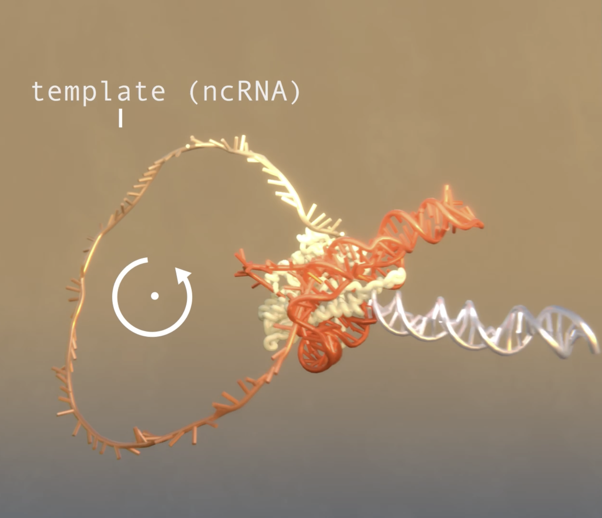

Phage-triggered reverse transcription assembles a toxic repetitive gene from a noncoding RNA.
Article | Wilkinson ME, Li D, Gao A, Macrae RK, Zhang F (2024).
Science (386), eadq3977
Our work was highlighted in Science,
Science News,
and Nature Reviews Genetics!
See here for a video explanation.